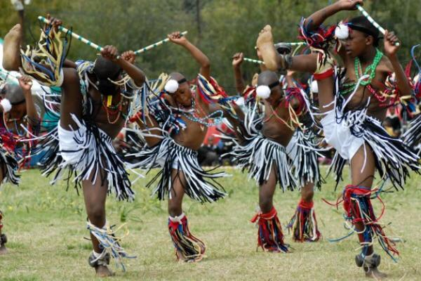
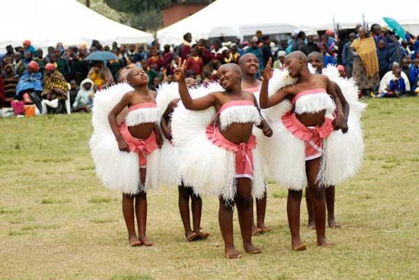

| Time | Activity |
|---|---|
| 09:00 | Opening Ceremony |
| 11:00 | Traditional Dance |
| 13:00 | Food Exhibition |
| 15:00 | Live Music |
The programme is carefully designed to provide entertainment and cultural education throughout the day. Visitors can enjoy a variety of performances and exhibitions. Each activity reflects the traditions and creativity of the Basotho people. The schedule ensures that there is something for everyone.
From music to food and dance, the festival offers a rich experience for tourists. It allows visitors to engage directly with the culture of Lesotho. The programme also includes interactive sessions and workshops. This makes the event both educational and entertaining.

